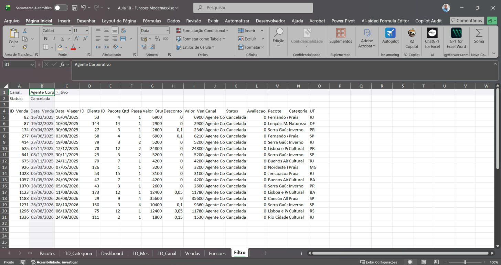

1PASSO
Crie a aba Funcoes
Abra a planilha da agência e salve uma cópia com F12 (eu salvei como “Aula 10 - Funcoes Modernas”).
Clique no + lá embaixo para criar uma aba nova, dê dois cliques no nome dela e digite Funcoes (retângulo). Aperte Enter.

Olá! Nesta aula você vai conhecer as funções que mudaram o Excel: ÚNICO, CLASSIFICAR, CLASSIFICARPOR e FILTRO. Você escreve a fórmula em uma célula e o resultado se espalha pelas células vizinhas.
Eu fiz tudo de verdade no Excel, com a planilha da agência de viagens, e tirei um print de cada passo, inclusive dos erros, para você reconhecer quando eles aparecerem. O círculo vermelho mostra onde clicar e o retângulo vermelho mostra o que olhar.
Baixar planilha da aula (.xlsx)
Até agora, cada fórmula que você escreveu devolvia um resultado numa célula. As funções desta aula devolvem vários resultados de uma vez: você escreve a fórmula em uma célula e o Excel preenche as células de baixo (e do lado) sozinho. Isso se chama despejar (em inglês, spill), e o resultado é uma matriz dinâmica.
Tira as repetições de uma coluna. 1.380 vendas viram 4 canais.
Coloca uma lista em ordem, de A a Z ou do maior para o menor.
Ordena uma lista usando outra como critério. É assim que se faz um ranking.
Traz só as linhas que atendem às suas condições. Um filtro que é fórmula.
| Versão | Funciona? |
|---|---|
| Microsoft 365 (instalado ou Excel Online) | Sim |
| Excel 2021 e 2024 | Sim |
| Excel 2019, 2016 ou mais antigo | Não. Aparece #NOME? |
Nomes em português: no Excel em português a função de filtrar se chama FILTRO (e não FILTRAR). Eu errei de propósito no passo 22 para você ver o que acontece.
Toque em qualquer print para ver em tamanho grande. Marque “Fiz este passo” para acompanhar o seu progresso (fica salvo só no seu navegador).
A coluna Canal da tabela tVendas tem 1.380 linhas, mas só 4 canais diferentes. Com ÚNICO você descobre quais são, com uma fórmula só.
Abra a planilha da agência e salve uma cópia com F12 (eu salvei como “Aula 10 - Funcoes Modernas”).
Clique no + lá embaixo para criar uma aba nova, dê dois cliques no nome dela e digite Funcoes (retângulo). Aperte Enter.
Em A1 digite o título Canais. Em A2 digite:
=ÚNICO(tVendas[Canal])
Repare: você está escrevendo em uma célula só (retângulo de baixo).
Aperte Enter. Apareceram Site, WhatsApp, Agente Corporativo e Loja, um em cada célula (retângulo). Em volta deles tem uma borda azul fininha: é a área do despejo.
A ordem é a ordem em que cada canal aparece pela primeira vez na tabela.
Clique em A4 (retângulo de baixo) e olhe a barra de fórmulas: a fórmula aparece cinza, apagadinha (retângulo de cima).
Isso quer dizer que A4 não tem fórmula própria. Ela só está mostrando um pedaço do resultado de A2. Se você quiser mudar alguma coisa, é em A2 que mexe.
Você pode colocar uma função dentro da outra. Aqui o ÚNICO tira as repetições e o CLASSIFICAR coloca em ordem alfabética.
Em C1 digite Pacotes (A-Z) e em D1 digite Faturamento. Em C2 escreva:
=CLASSIFICAR(ÚNICO(tVendas[Pacote]))
Leia de dentro para fora: primeiro o ÚNICO pega os pacotes sem repetir, depois o CLASSIFICAR coloca em ordem.
Aperte Enter e ajuste a largura da coluna C (dois cliques na divisa entre C e D). Os 15 pacotes apareceram de Bonito Aventura até Serra Gaúcha (retângulo).
Agora clique em D2 e escreva:
=SOMASES(tVendas[Valor_Venda];tVendas[Pacote];C2#;tVendas[Status];"Confirmada")
Olhe o C2# (retângulo do meio). O # depois de uma célula quer dizer “todo o despejo que começa nesta célula”. Em vez de escrever C2:C16, você escreve C2#.
Aperte Enter. Como o critério era uma lista de 15 pacotes, o SOMASES devolveu 15 resultados (retângulo), um para cada pacote.
Selecione D2:D16 e formate como Moeda (Página Inicial → Número → Moeda).
A lista em ordem alfabética é boa para procurar um pacote. Mas o chefe quer saber qual vende mais. Para isso você ordena os nomes usando o faturamento.
Em F1 digite Ranking de pacotes e em G1 Faturamento. Em F2 escreva:
=CLASSIFICARPOR(C2#;D2#;-1)
C2#: o que vai aparecer (os nomes dos pacotes, retângulo azul).D2#: o que decide a ordem (o faturamento, retângulo vermelho).-1: do maior para o menor. Se fosse 1, seria do menor para o maior.Aperte Enter. Em G2 eu escrevi =CLASSIFICAR(D2#;;-1) para ver os valores na mesma ordem (formatei como Moeda).
Resultado (retângulo): Cancún All Inclusive é o campeão com R$ 1.494.310,00, e Lençóis Maranhenses fica em último.
Fórmula que despeja precisa de espaço livre. Se alguma célula do caminho estiver ocupada, o Excel não escreve por cima: ele mostra um erro. Vamos provocar esse erro de propósito.
Clique em F5, que faz parte do ranking, digite teste e aperte Enter.
O ranking inteiro sumiu e F2 mostra #DESPEJAR! (retângulo de cima). A borda tracejada mostra a área de que a fórmula precisa. Clique no triângulo amarelo (círculo).
A primeira linha do menu diz o motivo: “O intervalo de despejo não está em branco” (retângulo). Clique em Selecionar Células Que Estão Obstruindo (círculo).
O Excel selecionou F5 (retângulo), a célula que está atrapalhando. A caixa de nome mostra F5 e a barra de fórmulas mostra “teste”.
Aperte Delete. O ranking volta na hora.
Agora vamos montar uma tela de consulta. O usuário escolhe o canal e o status numa lista, e a planilha mostra as vendas. A lista de canais vai vir do ÚNICO que você fez na Parte 1.
Crie mais uma aba e chame de Filtro. Em A1 digite Canal: e em A2 Status:.
Clique em B1, vá na guia Dados e clique em Validação de Dados (círculo, grupo Ferramentas de Dados).
Na janela Validação de dados, aba Configurações, clique na caixa Permitir (retângulo), que está em “Qualquer valor”.
Clique em Lista (círculo).
No campo Fonte (retângulo) digite:
=Funcoes!$A$2#
Ou seja: “use como opções tudo o que a fórmula ÚNICO despejou a partir de A2 na aba Funcoes”. Clique em OK (círculo).
Clique na setinha ao lado de B1 (círculo). Aparecem os 4 canais (retângulo). Escolha WhatsApp.
Clique em B2 e repita: Dados → Validação de Dados → Permitir: Lista. Desta vez, em Fonte, digite as opções separadas por ponto e vírgula (retângulo):
Confirmada;Cancelada
Clique em OK e escolha Cancelada na setinha de B2.
Agora a função mais poderosa da aula. Ela vai trazer da tabela tVendas só as linhas do canal e do status que você escolheu nas listas.
Em A4 escreva:
=tVendas[#Cabeçalhos]
Os 15 títulos da tabela aparecem em uma linha (retângulo). Também é um despejo, só que para o lado.
Em A5 eu escrevi o que muita gente escreve:
=FILTRAR(tVendas;(tVendas[Canal]=B1)*(tVendas[Status]=B2);"Nenhuma venda encontrada")
Repare que o Excel pinta B1 e B2 (retângulo) porque a fórmula usa as duas listas que você acabou de criar.
Apertei Enter e apareceu #NOME? (retângulo e círculo). Esse erro quer dizer: “não conheço essa função”.
O problema está no nome (retângulo de cima): no Excel em português a função se chama FILTRO, e não FILTRAR.
Clique em A5, aperte F2 e troque FILTRAR por FILTRO (retângulo):
=FILTRO(tVendas;(tVendas[Canal]=B1)*(tVendas[Status]=B2);"Nenhuma venda encontrada")
Entenda as três partes:
tVendas: de onde vêm as linhas.(tVendas[Canal]=B1)*(tVendas[Status]=B2): as condições. O * quer dizer E: a linha precisa ser do canal escolhido e do status escolhido. Para OU, você usaria +."Nenhuma venda encontrada": o que mostrar se nenhuma linha passar.Aperte Enter. Todas as vendas canceladas do canal WhatsApp foram despejadas, com as 15 colunas (retângulo).
Só que as colunas de data (retângulo do meio) aparecem como números: 45711, 45734… É assim que o Excel guarda datas por dentro. O FILTRO traz o valor, mas não traz a formatação.
Selecione as colunas B e C clicando nas letras (retângulo). Em Página Inicial → Número, escolha Data Abreviada (círculo). Ajuste a largura das colunas.
Agora o teste final. Clique na setinha de B1 e escolha Agente Corporativo (círculo).
Sem mexer na fórmula, o resultado mudou na hora (retângulo de baixo): agora aparecem só as vendas canceladas do Agente Corporativo. E a lista ficou menor, porque esse canal teve menos cancelamentos.
Você acabou de criar uma tela de consulta, sem macro e sem tabela dinâmica.
Em D1 digite Encontradas:. Em E1 escreva (retângulo):
=LINS(A5#)
LINS conta quantas linhas tem um intervalo. Com A5#, ele conta as linhas do despejo do FILTRO (retângulo grande).
Aperte Enter: 17 (retângulo). Troque o canal ou o status nas listas e veja o número mudar junto com a tabela.
Salve com Ctrl+B.
| Função | Para que serve | Exemplo da aula |
|---|---|---|
ÚNICO | Lista sem repetição | =ÚNICO(tVendas[Canal]) |
CLASSIFICAR | Ordena uma lista | =CLASSIFICAR(ÚNICO(tVendas[Pacote])) |
CLASSIFICARPOR | Ordena uma lista usando outra | =CLASSIFICARPOR(C2#;D2#;-1) |
FILTRO | Traz as linhas que atendem às condições | =FILTRO(tVendas;(...=B1)*(...=B2);"Nada") |
A2# | Todo o despejo que começa em A2 | =LINS(A5#) |
ESCOLHERCOLS.